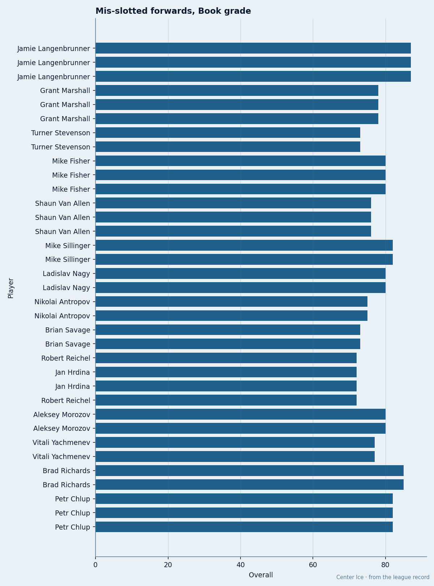

NJ
NJ ANA
ANA CAR
CARThe Mis-Slot Audit: 14 Cases Where the Book and the Lineup Card Disagree
PHX and OTT bury 3 men each above their slot grade. DET pays the most in hockey and still puts a 70 ahead of a 59 on the blue line.
 Doug ReimerAnalytics editor, ex-video coach · The Slot Report
Doug ReimerAnalytics editor, ex-video coach · The Slot Report
I checked every club's lineup card against the Book's current grades. A mis-slot means the player on the lower line or pairing carries a higher overall than the man he sits behind at the same position. Fourteen cases exist across nine clubs this season.  Phoenix Coyotes and
Phoenix Coyotes and  Ottawa Senators account for 6 of the 14.
Ottawa Senators account for 6 of the 14.
The Bureau's slot system assigns each man to a line or pairing. The Book grades each man from 50 to 99. When the grade disagrees with the slot at the same position, the lineup is wrong by the Bureau's own measure.

| Club | Mis-slotted man | Grade | Slot | Sits above | Their grade | Gap |
|---|---|---|---|---|---|---|
| NJ |  Jamie Langenbrunner86 Jamie Langenbrunner86 | 87 | L3RW |  Turner Stevenson72 Turner Stevenson72 | 73 | 14 |
| DET |  Phil Housley70 Phil Housley70 | 70 | L3LD |  Duvie Westcott59 Duvie Westcott59 | 59 | 11 |
| EDM | Alexei Semenov72 | 69 | L3LD | Lance Ward62 | 59 | 10 |
| NJ |  Brian Gionta75 Brian Gionta75 | 76 | L4RW | Turner Stevenson | 73 | 3 |
| PHX |  Mike Sillinger88 Mike Sillinger88 | 82 | L3RW |  Jan Hrdina78 Jan Hrdina78 | 72 | 10 |
| OTT |  Bryan Marchment76 Bryan Marchment76 | 75 | L3RD |  Anton Volchenkov73 Anton Volchenkov73 | 71 | 4 |
| ANA |  Aaron Ward73 Aaron Ward73 | 69 | L3LD |  Mike Mottau65 Mike Mottau65 | 61 | 8 |
| PHX |  Ladislav Nagy86 Ladislav Nagy86 | 80 | L3C |  Nikolai Antropov81 Nikolai Antropov81 | 75 | 5 |
| PHX |  Drake Berehowsky78 Drake Berehowsky78 | 72 | L3LD |  Cale Hulse72 Cale Hulse72 | 66 | 6 |
| OTT |  Mike Fisher80 Mike Fisher80 | 80 | L3C |  Shaun Van Allen78 Shaun Van Allen78 | 76 | 4 |
| OTT |  Karel Rachunek76 Karel Rachunek76 | 74 | L3LD | Anton Volchenkov | 71 | 3 |
| TOR |  Brad Richards87 Brad Richards87 | 85 | L3C | Petr Chlup86 | 82 | 3 |
| CAR |  Danny Markov72 Danny Markov72 | 72 | L3LD |  Niclas Wallin69 Niclas Wallin69 | 69 | 3 |
| PIT |  Aleksey Morozov79 Aleksey Morozov79 | 80 | L3C |  Vitali Yachmenev76 Vitali Yachmenev76 | 77 | 3 |
Zero top-60 players and three buried men
Phoenix Coyotes carries no player rated 86 or above. The Book's top 60 stops at 86; PHX's highest-rated man is Mike Sillinger at 82, and he starts on the third right wing. The gap between Sillinger's 82 and the grade of the man he plays above (Jan Hrdina, 72) is 10 points. PHX pays $47.81M for that arrangement and sits 4 points behind the 8th-place West club.
Three mis-slots at one club is not a coaching lapse. It is arithmetic. PHX has 0 players in the top 60. A roster without 6 forwards rated 75 or better forces the coaching staff to put players in slots the Book says they do not belong in, because the alternative is nobody there at all. Sillinger has 30 points in 28 games. The roster says there is no one else to fill the spot he is not in.
Ottawa Senators is the other club with three mis-slots: Mike Fisher at 80 buried on the third center, Bryan Marchment at 75 and Karel Rachunek at 74 both stuck on the third pair behind Anton Volchenkov at 71. OTT has 3 players in the Book's top 60 ( Patrick Lalime90 at 90,
Patrick Lalime90 at 90,  Daniel Alfredsson90 at 88,
Daniel Alfredsson90 at 88,  Martin Havlat88 at 86), but none of them is a center or a defenseman, so the depth problem is positional. OTT pays $42.80M, sits 6 points behind 8th in the East, and cannot fill its top six without putting a 75-rated defenseman on the third pair.
Martin Havlat88 at 86), but none of them is a center or a defenseman, so the depth problem is positional. OTT pays $42.80M, sits 6 points behind 8th in the East, and cannot fill its top six without putting a 75-rated defenseman on the third pair.
The most expensive room with no stars
 Detroit Red Wings pays $80.89M, the league's highest payroll, and gets $1.39M per point. DET has 0 players in the top 60. Their single mis-slot carries the largest grade gap in hockey outside of Langenbrunner: Phil Housley at 70 sits on the third left side behind Duvie Westcott at 59, a difference of 11 points. Housley has 21 points in 48 games. Westcott has 1 point in 21 games.
Detroit Red Wings pays $80.89M, the league's highest payroll, and gets $1.39M per point. DET has 0 players in the top 60. Their single mis-slot carries the largest grade gap in hockey outside of Langenbrunner: Phil Housley at 70 sits on the third left side behind Duvie Westcott at 59, a difference of 11 points. Housley has 21 points in 48 games. Westcott has 1 point in 21 games.
Detroit has the biggest payroll in the league and no top-60 defenseman. That is why the third pairing carries a man 11 points above the first.
The grade gap tracks the roster hole
Nine clubs have at least one mis-slot. Of the 7 clubs with 0 players in the Book's top 60, 4 carry mis-slots: DET, EDM, PHX, CAR. The 3 clubs with 0 top-60 players and no mis-slot ( Buffalo Sabres,
Buffalo Sabres,  New York Islanders,
New York Islanders,  Philadelphia Flyers) still clear the assignment only because their best players happen to sit in the right slots by luck of roster construction, not by depth.
Philadelphia Flyers) still clear the assignment only because their best players happen to sit in the right slots by luck of roster construction, not by depth.
At the other end,  New York Rangers leads hockey with 7 players in the top 60 and has 0 mis-slots.
New York Rangers leads hockey with 7 players in the top 60 and has 0 mis-slots.  Colorado Avalanche has 6 and 0.
Colorado Avalanche has 6 and 0.  Toronto Maple Leafs has 5 and 1 (Richards, 85, on the third center behind Chlup at 82, a gap of 3). Ed Taylor addressed Richards' extension to The Tunnel's Jan Kowalczyk this week: "Of course we are offering Marian extension... same for Brad."
Toronto Maple Leafs has 5 and 1 (Richards, 85, on the third center behind Chlup at 82, a gap of 3). Ed Taylor addressed Richards' extension to The Tunnel's Jan Kowalczyk this week: "Of course we are offering Marian extension... same for Brad."
PHX: 0 top-60 players, 3 mis-slots. OTT: 3 top-60 players but none at the positions that matter for these slots, 3 mis-slots. DET: 0 top-60 players, 1 mis-slot, and the widest gap of any case involving a defenseman.
The 86-point floor is where the Book's top 60 ends. A club with no player above that line does not have a first pair, a first line, or a top six. The slot labels still get printed on the lineup card. Those men are interchangeable because none of them is good enough to move.